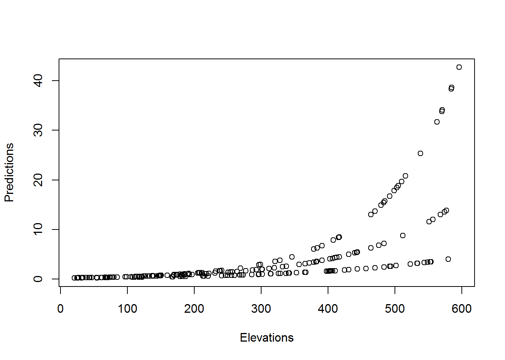
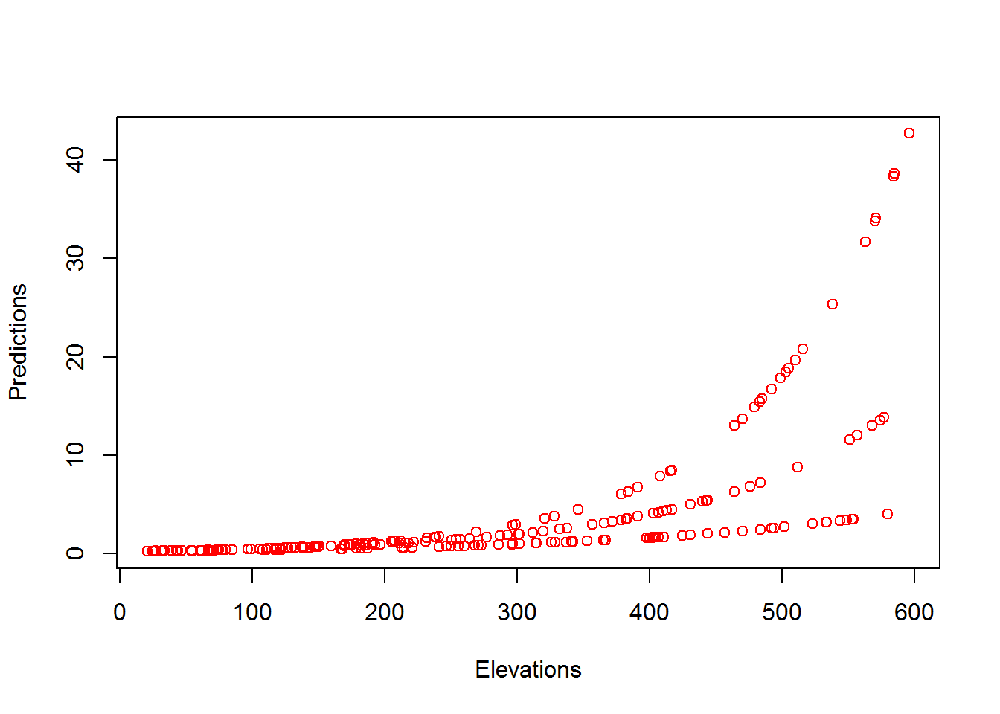
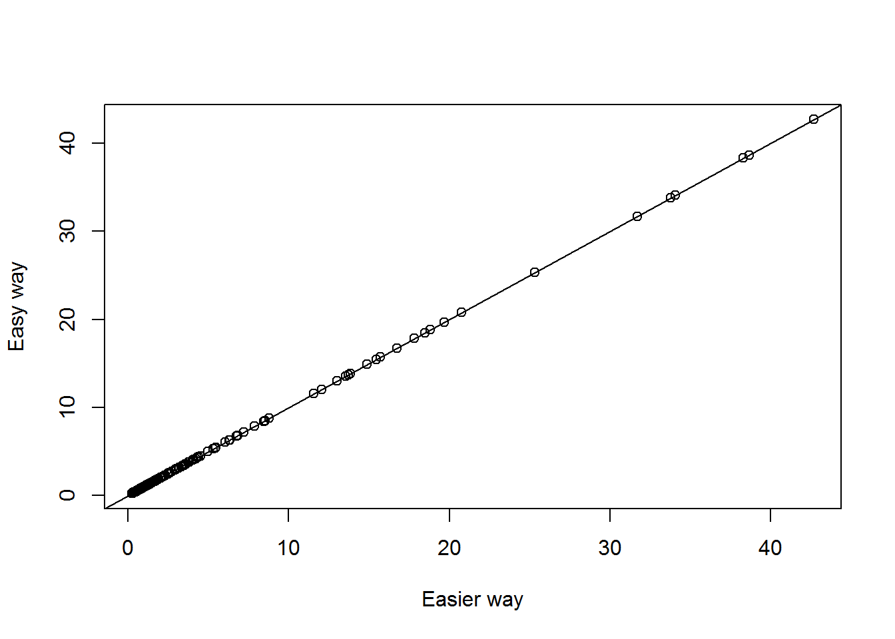
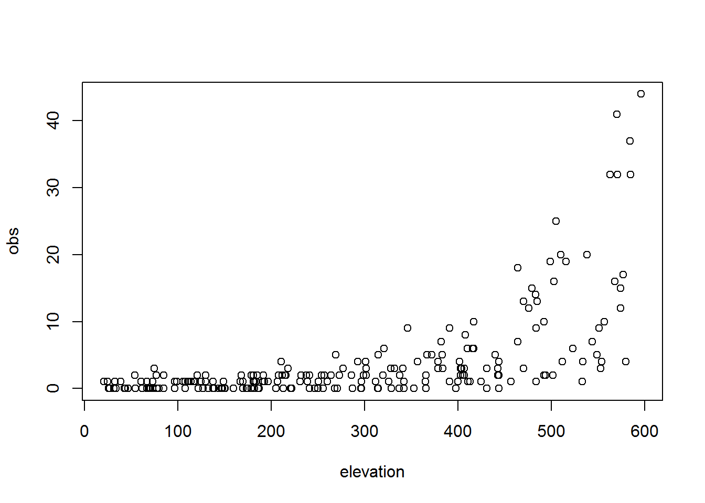
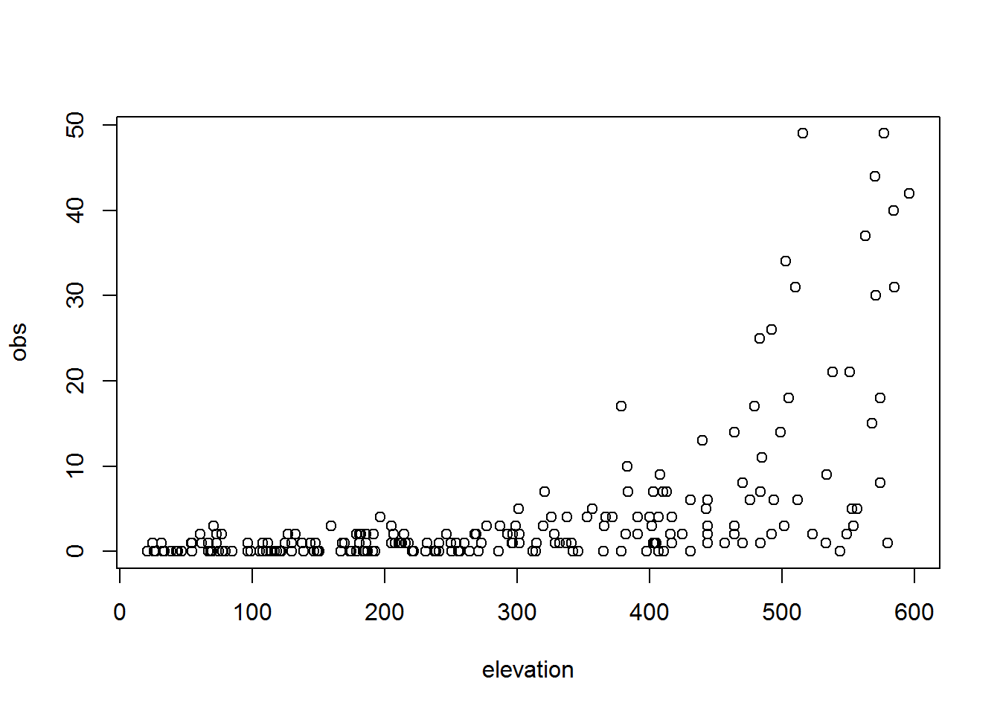
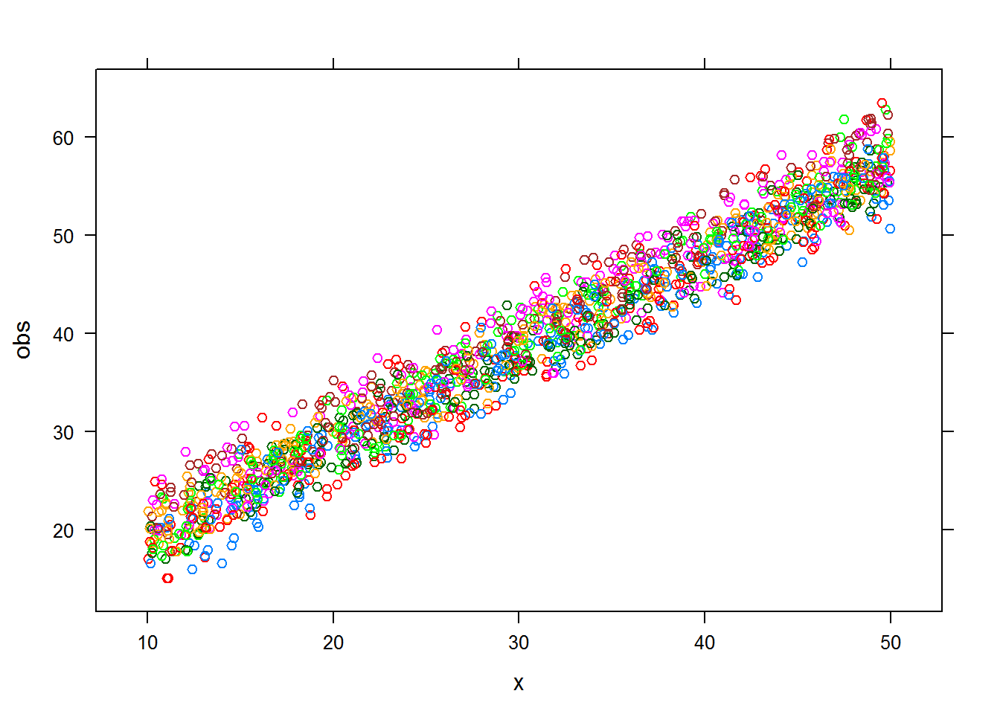
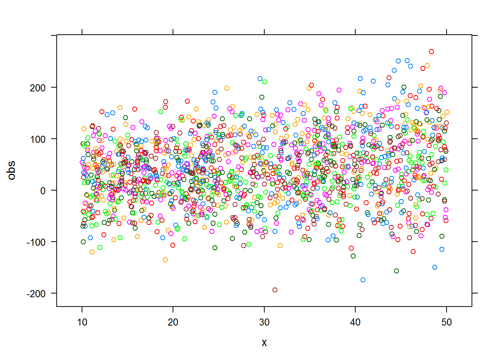
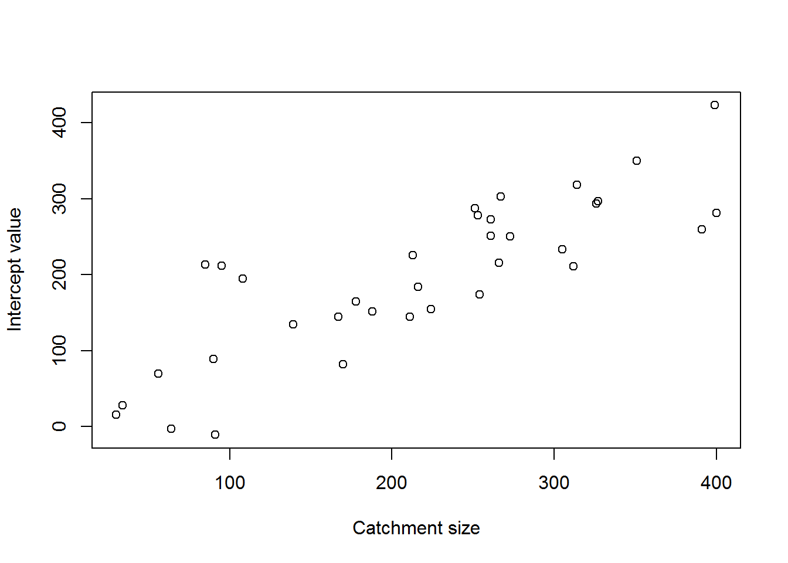
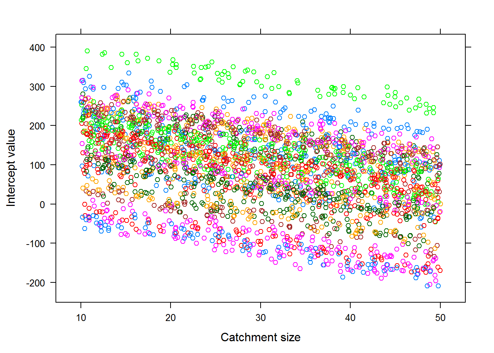

GLMMs & HLMs in Decision Contexts
1 Class 14 preliminaries
1.1 Housekeeping
- Supplemental background reading(s):
- Conroy and Peterson 116-129
- Assignment due: None
- Class project: Think about decision model (objectives, nodes, utilities)
- Link to class recording YouTube
- Today’s R script Class-14.R
1.2 Class overview & objectives
This will be the last class the deals with predicting an outcome as a result of some inputs using a general or generalized linear model.
By the end of this tutorial you should be able to:
- Account for overdispersion using a Generalized Linear Mixed Model (GLMM)
- Account for hierarchical dependence in linear model
- Use upper level predictors in a hierarchical linear model.
1.3 Preliminaries
- We will be using simulation to create our datasets today. I like this approach because I believe it is easier for students to understand what functions like
glm(),glmm(), andlmer()because you have the potential to understand how the date were generated and how the outputs of the functions match your inputs. This is a powerful approach especially as it relates to decision making because you can simulate what potential data might look like and if the predictions from that model can be use in a decision making context. - The R scipt for class can be found here
- Once you have the script where you want it it where you want open the R script and be sure to check the working directory
getwd()and make sure it is where your folder is. - If your working directory is not correct, you can set it in Rstudio: “Session –> Set Working Directory –> To source file location”. Or you can use the
setwd()in the console.
2 A quick primer of matrix multiplication
Matrices are the backbone of most statistical analyses and are an essential tool in the decision makers toolbox. Here we cover a few neat tricks with matrices that will come in very handy later.
First we need to create a matrix using the matrix() function. We will make a 5 column matrix that is filled by row.
# First create a 4 row by 5 column matrix
MTX <- matrix(c(1,1,1,1,1,
2,2,2,2,2,
3,3,3,3,3,
4,4,4,4,4),
ncol = 5, # 5 columns in matrix
byrow = T) # fill matrix by row
# Print it out
MTX ## [,1] [,2] [,3] [,4] [,5]
## [1,] 1 1 1 1 1
## [2,] 2 2 2 2 2
## [3,] 3 3 3 3 3
## [4,] 4 4 4 4 4We did not need to specify how many rows in the matrix because we filled by row so R is smart enough to allocate the matrix elements where they are supposed to go.
Now that we have a matrix we can do useful things like tranposing it. By transposing the matrix the rows become columns and columns become the rows.
t(MTX)## [,1] [,2] [,3] [,4]
## [1,] 1 2 3 4
## [2,] 1 2 3 4
## [3,] 1 2 3 4
## [4,] 1 2 3 4
## [5,] 1 2 3 4We can also multiply a matrix by a scalar. Let’s create a scalar and multiply the matrix by a scalar
A <- 0.5
# multiply the matrix by a scalar
MTX*A## [,1] [,2] [,3] [,4] [,5]
## [1,] 0.5 0.5 0.5 0.5 0.5
## [2,] 1.0 1.0 1.0 1.0 1.0
## [3,] 1.5 1.5 1.5 1.5 1.5
## [4,] 2.0 2.0 2.0 2.0 2.0Multiply matrix by another scalar, 10.
MTX*10## [,1] [,2] [,3] [,4] [,5]
## [1,] 10 10 10 10 10
## [2,] 20 20 20 20 20
## [3,] 30 30 30 30 30
## [4,] 40 40 40 40 40We can multiply a matrix by a vector. Create a vector and multiply the matrix by a vector
WARNING THIS IS NOT MATRIX MULTIPLICATION
V = c(10,1,0.1,0.01)
MTX*V## [,1] [,2] [,3] [,4] [,5]
## [1,] 10.00 10.00 10.00 10.00 10.00
## [2,] 2.00 2.00 2.00 2.00 2.00
## [3,] 0.30 0.30 0.30 0.30 0.30
## [4,] 0.04 0.04 0.04 0.04 0.04To illustrate matrix multiplication we first create an identity matrix. This is a matrix with 1’s along a diagonal from the top # left to bottom right
IDENT = matrix(c(1,0,0,0,1,0,0,0,1), ncol= 3)
IDENT## [,1] [,2] [,3]
## [1,] 1 0 0
## [2,] 0 1 0
## [3,] 0 0 1Identity matrices are super useful in quantitative applications so you’ve probably used them and didn’t know. Usually when you fit a linear model by ordinary least squares you use matrix multiplication. Let’s create a vector that has the number of elements equal to the number of columns in the matrix matrix multiplication is specified using %*% so we have
V_new = c(1,2,3)
IDENT %*% V_new## [,1]
## [1,] 1
## [2,] 2
## [3,] 3What happens if we just use the regular multiplication operator, *
IDENT * V_new## [,1] [,2] [,3]
## [1,] 1 0 0
## [2,] 0 2 0
## [3,] 0 0 3This is because matrix multiplication works this way
\(\begin{pmatrix}2 & 5 \\3 & 6 \\4 & 7 \end{pmatrix}\cdot \begin{pmatrix}10 \\15\end{pmatrix}\)
Which is
\(2\cdot 10+5\cdot 15 = 95\)
\(3\cdot 10+6\cdot 15 = 120\)
\(4\cdot 10 + 7\cdot 15 = 145\)
or the vector
\(\begin{pmatrix} 95\\120\\145\end{pmatrix}\)
Let’s check this with a little R code
c = matrix(c(2,3,4,5,6,7), ncol = 2)
z = c(10,15)
c %*% z## [,1]
## [1,] 95
## [2,] 120
## [3,] 145whereas regular multiplication with matrices in R works this way
\(\begin{pmatrix}2 \cdot 10 & 5 \cdot 15\\3 \cdot 15 & 6\cdot10\\4 \cdot 10 & 7\cdot15\end{pmatrix}\)
## check with a little R code
c * z## [,1] [,2]
## [1,] 20 75
## [2,] 45 60
## [3,] 40 105Why do we care? Matrices make it incredibly easy to make linear predictions from existing or new data.
3 Poisson over dispersion
Here we are going to look at over dispersion again in the Poisson distributed outcome. We previously used the quasipoisson to deal with this extra variation. Below we will see another approach to deal with extra variation. We will start first by simulating a known dataset. Using a known dataset has several advantages:
- We know how functions like
glm()estimate parameters - If we can simulate a dataset we can understand it
- Simulation can help evaluate whether the analysis will provide the necessary predictions to inform decisions.
Ok, let’s go and simulate a Poisson distributed outcome without any extra variation.
We will a simulate a dataset that has 220 observations where a response is Poisson distributed and linearly related to elevation, habitat, and a some interactions.
This model is formally described as:
\[log(\lambda) = \beta_0 + \beta_1\cdot \text{elevation} + \beta_3\cdot \text{habitat}+ \beta_4\text{elevation}\cdot\text{habitat}\]
and
\[ Y \sim Poisson(\lambda)\].
set.seed(8433)# for reproducibility
n=220
my_data<- data.frame(
elevation=round(runif(n,20,600),0),
habitat=sample(x=c("hab1","hab2","hab3"),
size=n,
replace=TRUE))
my_data$habitat<- as.factor(my_data$habitat)Here is a list of betas we need to predict our Poisson distributed outcomes.
betas<- c(-1.51,# intercept
0.005, # effect of elevation
0.1,-0.1, # effect of habitat 2 and 3
0.002,0.004) # interaction of habitat with elevationBoy,that is a lot of betas! It will be a huge pain in the butt to string them together to get a prediction. Three ways to make the prediction comes to mind:
- The hard way (subsetting)
- Not as hard (transpose matrix & sum)
- Easy way (matrix)
Let’s see what I mean here.
Here we will use subsetting to make predictions the hard way.
# 1. THE HARD WAY
my_data$Y1<-NA
my_data[my_data$habitat=="hab1",]$Y1<- exp(betas[1]+
betas[2]*my_data[my_data$habitat=="hab1",]$elevation)
my_data[my_data$habitat=="hab2",]$Y1<- exp(betas[1]+
betas[2]*my_data[my_data$habitat=="hab2",]$elevation +
betas[3] +
betas[5]*my_data[my_data$habitat=="hab2",]$elevation)
my_data[my_data$habitat=="hab3",]$Y1<- exp(betas[1]+
betas[2]*my_data[my_data$habitat=="hab3",]$elevation +
betas[4] +
betas[6]*my_data[my_data$habitat=="hab3",]$elevation) Holy crap that was a big pain, especially if there were more habitat types! Regardless, let’s see what the predictions look like. Note the use of the exp() function to create the log link.
plot(Y1~elevation,
data=my_data,
ylab="Predictions",
xlab="Elevations")
Keep in mind we are working with the prediction model here and we have not added any uncertainty yet.
We can use a matrix to make things a bit easier. The function model.matrix() provides what is called the design matrix for a linear model, commonly referred to as \(X\) in most statistical texts. All we need to do is provide a formula for the linear model and a data.frame() to create the design matrix. (NOTE: understanding these really facilitate understanding of capture recapture design matrices and PIMs).
Ok, let’s give it a shot and make the design matrix.
# 2. THE EASIER WAY
model_matrix<- model.matrix(
object=as.formula("~elevation+habitat+elevation:habitat"),
data=my_data)
head(model_matrix) # THIS IS THE DESIGN MATRIX## (Intercept) elevation habitathab2 habitathab3 elevation:habitathab2
## 1 1 269 0 1 0
## 2 1 366 1 0 366
## 3 1 398 0 0 0
## 4 1 39 1 0 39
## 5 1 111 0 0 0
## 6 1 150 1 0 150
## elevation:habitathab3
## 1 269
## 2 0
## 3 0
## 4 0
## 5 0
## 6 0Now is it as simple as multiplying the design matrix by our vector of betas?
X<- model_matrix * betas
head(X)## (Intercept) elevation habitathab2 habitathab3 elevation:habitathab2
## 1 -1.510 0.538 0.000 -1.51 0.000
## 2 0.005 1.464 -0.100 0.00 1.464
## 3 0.100 -600.980 0.000 0.00 0.000
## 4 -0.100 0.195 0.004 0.00 0.195
## 5 0.002 11.100 0.000 0.00 0.000
## 6 0.004 -15.000 0.005 0.00 -15.000
## elevation:habitathab3
## 1 26.9
## 2 0.0
## 3 0.0
## 4 0.0
## 5 0.0
## 6 0.0Recall, what matrix multiplication is from above and you should think that is not right…
If we transpose the matrix that might help out.
X<- t(model_matrix) * betas # OK this sort of works
head(X)## 1 2 3 4 5 6 7
## (Intercept) -1.510 -1.510 -1.51 -1.510 -1.510 -1.51 -1.510
## elevation 1.345 1.830 1.99 0.195 0.555 0.75 0.215
## habitathab2 0.000 0.100 0.00 0.100 0.000 0.10 0.100
## habitathab3 -0.100 0.000 0.00 0.000 0.000 0.00 0.000
## elevation:habitathab2 0.000 0.732 0.00 0.078 0.000 0.30 0.086
## elevation:habitathab3 1.076 0.000 0.00 0.000 0.000 0.00 0.000
## 8 9 10 11 12 13 14
## (Intercept) -1.510 -1.51 -1.510 -1.510 -1.510 -1.510 -1.510
## elevation 0.745 0.35 0.635 0.495 0.930 1.660 1.160
## habitathab2 0.000 0.00 0.000 0.000 0.100 0.100 0.000
## habitathab3 -0.100 0.00 -0.100 -0.100 0.000 0.000 -0.100
## elevation:habitathab2 0.000 0.00 0.000 0.000 0.372 0.664 0.000
## elevation:habitathab3 0.596 0.00 0.508 0.396 0.000 0.000 0.928
## 15 16 17 18 19 20 21
## (Intercept) -1.510 -1.510 -1.510 -1.510 -1.510 -1.510 -1.510
## elevation 2.015 2.125 1.110 0.955 0.595 1.910 2.035
## habitathab2 0.100 0.000 0.100 0.000 0.000 0.100 0.000
## habitathab3 0.000 0.000 0.000 -0.100 -0.100 0.000 0.000
## elevation:habitathab2 0.806 0.000 0.444 0.000 0.000 0.764 0.000
## elevation:habitathab3 0.000 0.000 0.000 0.764 0.476 0.000 0.000
## 22 23 24 25 26 27 28
## (Intercept) -1.510 -1.510 -1.510 -1.510 -1.510 -1.51 -1.51
## elevation 1.765 0.875 1.080 1.355 2.665 0.40 0.80
## habitathab2 0.000 0.100 0.100 0.000 0.000 0.00 0.10
## habitathab3 0.000 0.000 0.000 0.000 0.000 -0.10 0.00
## elevation:habitathab2 0.000 0.350 0.432 0.000 0.000 0.00 0.32
## elevation:habitathab3 0.000 0.000 0.000 0.000 0.000 0.32 0.00
## 29 30 31 32 33 34 35 36
## (Intercept) -1.510 -1.510 -1.510 -1.510 -1.51 -1.51 -1.510 -1.51
## elevation 0.125 1.730 2.870 2.785 1.25 2.00 0.165 1.51
## habitathab2 0.100 0.000 0.100 0.100 0.00 0.00 0.100 0.00
## habitathab3 0.000 -0.100 0.000 0.000 0.00 0.00 0.000 0.00
## elevation:habitathab2 0.050 0.000 1.148 1.114 0.00 0.00 0.066 0.00
## elevation:habitathab3 0.000 1.384 0.000 0.000 0.00 0.00 0.000 0.00
## 37 38 39 40 41 42 43 44
## (Intercept) -1.51 -1.510 -1.510 -1.510 -1.51 -1.510 -1.51 -1.510
## elevation 2.55 0.425 2.425 0.275 1.63 1.495 1.34 0.935
## habitathab2 0.00 0.100 0.000 0.000 0.00 0.000 0.00 0.000
## habitathab3 -0.10 0.000 -0.100 0.000 0.00 -0.100 0.00 0.000
## elevation:habitathab2 0.00 0.170 0.000 0.000 0.00 0.000 0.00 0.000
## elevation:habitathab3 2.04 0.000 1.940 0.000 0.00 1.196 0.00 0.000
## 45 46 47 48 49 50 51 52
## (Intercept) -1.510 -1.510 -1.510 -1.510 -1.51 -1.510 -1.51 -1.51
## elevation 2.525 1.105 0.895 0.530 0.85 1.465 0.54 0.16
## habitathab2 0.000 0.000 0.000 0.000 0.00 0.100 0.00 0.00
## habitathab3 -0.100 0.000 0.000 -0.100 -0.10 0.000 0.00 0.00
## elevation:habitathab2 0.000 0.000 0.000 0.000 0.00 0.586 0.00 0.00
## elevation:habitathab3 2.020 0.000 0.000 0.424 0.68 0.000 0.00 0.00
## 53 54 55 56 57 58 59
## (Intercept) -1.510 -1.510 -1.510 -1.510 -1.510 -1.510 -1.510
## elevation 1.645 1.575 0.560 1.705 0.690 2.085 1.825
## habitathab2 0.000 0.000 0.100 0.000 0.000 0.000 0.000
## habitathab3 0.000 0.000 0.000 0.000 -0.100 -0.100 0.000
## elevation:habitathab2 0.000 0.000 0.224 0.000 0.000 0.000 0.000
## elevation:habitathab3 0.000 0.000 0.000 0.000 0.552 1.668 0.000
## 60 61 62 63 64 65 66
## (Intercept) -1.510 -1.510 -1.510 -1.510 -1.510 -1.510 -1.510
## elevation 2.925 2.560 2.085 0.335 2.460 0.910 1.955
## habitathab2 0.000 0.100 0.100 0.100 0.000 0.100 0.100
## habitathab3 -0.100 0.000 0.000 0.000 -0.100 0.000 0.000
## elevation:habitathab2 0.000 1.024 0.834 0.134 0.000 0.364 0.782
## elevation:habitathab3 2.340 0.000 0.000 0.000 1.968 0.000 0.000
## 67 68 69 70 71 72 73
## (Intercept) -1.510 -1.510 -1.510 -1.510 -1.510 -1.510 -1.510
## elevation 2.580 0.235 1.510 0.335 1.055 1.270 1.025
## habitathab2 0.000 0.100 0.100 0.000 0.100 0.100 0.000
## habitathab3 -0.100 0.000 0.000 0.000 0.000 0.000 -0.100
## elevation:habitathab2 0.000 0.094 0.604 0.000 0.422 0.508 0.000
## elevation:habitathab3 2.064 0.000 0.000 0.000 0.000 0.000 0.820
## 74 75 76 77 78 79 80
## (Intercept) -1.510 -1.510 -1.51 -1.510 -1.510 -1.51 -1.510
## elevation 0.235 2.920 1.43 1.205 2.025 0.61 0.965
## habitathab2 0.100 0.000 0.00 0.000 0.000 0.00 0.100
## habitathab3 0.000 -0.100 0.00 -0.100 0.000 0.00 0.000
## elevation:habitathab2 0.094 0.000 0.00 0.000 0.000 0.00 0.386
## elevation:habitathab3 0.000 2.336 0.00 0.964 0.000 0.00 0.000
## 81 82 83 84 85 86 87
## (Intercept) -1.510 -1.510 -1.510 -1.510 -1.51 -1.510 -1.51
## elevation 2.065 0.270 1.830 1.605 2.72 0.170 2.51
## habitathab2 0.100 0.000 0.100 0.000 0.00 0.100 0.00
## habitathab3 0.000 -0.100 0.000 -0.100 0.00 0.000 0.00
## elevation:habitathab2 0.826 0.000 0.732 0.000 0.00 0.068 0.00
## elevation:habitathab3 0.000 0.216 0.000 1.284 0.00 0.000 0.00
## 88 89 90 91 92 93 94
## (Intercept) -1.510 -1.51 -1.510 -1.510 -1.510 -1.510 -1.510
## elevation 2.380 2.22 0.925 2.815 1.040 1.685 2.755
## habitathab2 0.100 0.00 0.100 0.000 0.000 0.000 0.100
## habitathab3 0.000 0.00 0.000 -0.100 -0.100 0.000 0.000
## elevation:habitathab2 0.952 0.00 0.370 0.000 0.000 0.000 1.102
## elevation:habitathab3 0.000 0.00 0.000 2.252 0.832 0.000 0.000
## 95 96 97 98 99 100 101
## (Intercept) -1.510 -1.510 -1.510 -1.510 -1.510 -1.510 -1.510
## elevation 1.435 0.135 1.320 0.345 1.025 1.690 1.915
## habitathab2 0.100 0.100 0.100 0.000 0.000 0.100 0.100
## habitathab3 0.000 0.000 0.000 0.000 -0.100 0.000 0.000
## elevation:habitathab2 0.574 0.054 0.528 0.000 0.000 0.676 0.766
## elevation:habitathab3 0.000 0.000 0.000 0.000 0.820 0.000 0.000
## 102 103 104 105 106 107 108
## (Intercept) -1.510 -1.510 -1.510 -1.510 -1.510 -1.510 -1.510
## elevation 1.895 0.390 1.485 0.605 2.415 2.395 1.155
## habitathab2 0.100 0.100 0.000 0.000 0.000 0.000 0.100
## habitathab3 0.000 0.000 -0.100 -0.100 -0.100 -0.100 0.000
## elevation:habitathab2 0.758 0.156 0.000 0.000 0.000 0.000 0.462
## elevation:habitathab3 0.000 0.000 1.188 0.484 1.932 1.916 0.000
## 109 110 111 112 113 114 115
## (Intercept) -1.510 -1.51 -1.510 -1.510 -1.510 -1.510 -1.510
## elevation 2.870 2.85 2.320 0.365 2.015 2.155 2.320
## habitathab2 0.100 0.00 0.100 0.100 0.000 0.000 0.100
## habitathab3 0.000 -0.10 0.000 0.000 0.000 0.000 0.000
## elevation:habitathab2 1.148 0.00 0.928 0.146 0.000 0.000 0.928
## elevation:habitathab3 0.000 2.28 0.000 0.000 0.000 0.000 0.000
## 116 117 118 119 120 121 122
## (Intercept) -1.510 -1.510 -1.51 -1.510 -1.51 -1.510 -1.510
## elevation 1.505 2.495 0.65 2.885 1.71 0.305 0.130
## habitathab2 0.100 0.000 0.00 0.100 0.00 0.000 0.100
## habitathab3 0.000 -0.100 -0.10 0.000 0.00 0.000 0.000
## elevation:habitathab2 0.602 0.000 0.00 1.154 0.00 0.000 0.052
## elevation:habitathab3 0.000 1.996 0.52 0.000 0.00 0.000 0.000
## 123 124 125 126 127 128 129
## (Intercept) -1.510 -1.510 -1.510 -1.510 -1.510 -1.510 -1.510
## elevation 0.335 1.205 0.275 0.905 0.220 0.755 0.485
## habitathab2 0.000 0.000 0.000 0.100 0.100 0.000 0.000
## habitathab3 0.000 0.000 -0.100 0.000 0.000 -0.100 -0.100
## elevation:habitathab2 0.000 0.000 0.000 0.362 0.088 0.000 0.000
## elevation:habitathab3 0.000 0.000 0.220 0.000 0.000 0.604 0.388
## 130 131 132 133 134 135 136
## (Intercept) -1.510 -1.510 -1.51 -1.510 -1.51 -1.510 -1.510
## elevation 0.720 0.570 2.20 1.955 2.01 0.690 2.055
## habitathab2 0.100 0.000 0.10 0.000 0.00 0.100 0.000
## habitathab3 0.000 -0.100 0.00 -0.100 0.00 0.000 0.000
## elevation:habitathab2 0.288 0.000 0.88 0.000 0.00 0.276 0.000
## elevation:habitathab3 0.000 0.456 0.00 1.564 0.00 0.000 0.000
## 137 138 139 140 141 142 143
## (Intercept) -1.510 -1.51 -1.510 -1.510 -1.510 -1.510 -1.510
## elevation 1.485 2.46 2.855 0.355 1.640 0.930 0.485
## habitathab2 0.000 0.00 0.000 0.000 0.000 0.000 0.100
## habitathab3 0.000 0.00 -0.100 0.000 -0.100 -0.100 0.000
## elevation:habitathab2 0.000 0.00 0.000 0.000 0.000 0.000 0.194
## elevation:habitathab3 0.000 0.00 2.284 0.000 1.312 0.744 0.000
## 144 145 146 147 148 149 150 151
## (Intercept) -1.510 -1.510 -1.510 -1.51 -1.51 -1.510 -1.51 -1.510
## elevation 0.425 2.980 1.190 0.91 2.05 1.035 2.22 1.065
## habitathab2 0.000 0.000 0.000 0.00 0.10 0.000 0.00 0.000
## habitathab3 -0.100 -0.100 -0.100 0.00 0.00 -0.100 0.00 0.000
## elevation:habitathab2 0.000 0.000 0.000 0.00 0.82 0.000 0.00 0.000
## elevation:habitathab3 0.340 2.384 0.952 0.00 0.00 0.828 0.00 0.000
## 152 153 154 155 156 157 158
## (Intercept) -1.51 -1.510 -1.510 -1.510 -1.510 -1.510 -1.510
## elevation 2.67 1.255 0.960 1.195 0.870 2.615 0.905
## habitathab2 0.00 0.100 0.000 0.000 0.000 0.000 0.100
## habitathab3 0.00 0.000 -0.100 -0.100 -0.100 0.000 0.000
## elevation:habitathab2 0.00 0.502 0.000 0.000 0.000 0.000 0.362
## elevation:habitathab3 0.00 0.000 0.768 0.956 0.696 0.000 0.000
## 159 160 161 162 163 164 165
## (Intercept) -1.510 -1.510 -1.510 -1.510 -1.510 -1.510 -1.51
## elevation 2.840 2.690 1.060 1.235 0.695 0.105 0.65
## habitathab2 0.100 0.000 0.000 0.000 0.100 0.000 0.00
## habitathab3 0.000 -0.100 -0.100 0.000 0.000 -0.100 -0.10
## elevation:habitathab2 1.136 0.000 0.000 0.000 0.278 0.000 0.00
## elevation:habitathab3 0.000 2.152 0.848 0.000 0.000 0.084 0.52
## 166 167 168 169 170 171 172
## (Intercept) -1.510 -1.510 -1.510 -1.51 -1.510 -1.510 -1.510
## elevation 0.895 0.740 1.075 0.54 1.920 2.215 2.220
## habitathab2 0.000 0.100 0.000 0.00 0.000 0.100 0.100
## habitathab3 -0.100 0.000 0.000 0.00 -0.100 0.000 0.000
## elevation:habitathab2 0.000 0.296 0.000 0.00 0.000 0.886 0.888
## elevation:habitathab3 0.716 0.000 0.000 0.00 1.536 0.000 0.000
## 173 174 175 176 177 178 179 180
## (Intercept) -1.510 -1.510 -1.510 -1.510 -1.51 -1.510 -1.51 -1.51
## elevation 1.385 2.040 1.285 0.385 1.60 0.625 1.28 1.30
## habitathab2 0.100 0.000 0.100 0.100 0.10 0.000 0.00 0.00
## habitathab3 0.000 -0.100 0.000 0.000 0.00 -0.100 0.00 0.00
## elevation:habitathab2 0.554 0.000 0.514 0.154 0.64 0.000 0.00 0.00
## elevation:habitathab3 0.000 1.632 0.000 0.000 0.00 0.500 0.00 0.00
## 181 182 183 184 185 186 187 188
## (Intercept) -1.51 -1.510 -1.510 -1.510 -1.51 -1.510 -1.51 -1.510
## elevation 2.35 1.560 0.585 2.220 2.47 2.765 2.42 0.375
## habitathab2 0.00 0.100 0.000 0.100 0.00 0.000 0.00 0.100
## habitathab3 0.00 0.000 0.000 0.000 0.00 0.000 0.00 0.000
## elevation:habitathab2 0.00 0.624 0.000 0.888 0.00 0.000 0.00 0.150
## elevation:habitathab3 0.00 0.000 0.000 0.000 0.00 0.000 0.00 0.000
## 189 190 191 192 193 194 195
## (Intercept) -1.510 -1.510 -1.510 -1.510 -1.510 -1.510 -1.510
## elevation 2.285 1.365 2.515 1.835 2.320 1.090 2.420
## habitathab2 0.000 0.000 0.000 0.000 0.000 0.100 0.100
## habitathab3 0.000 0.000 -0.100 0.000 -0.100 0.000 0.000
## elevation:habitathab2 0.000 0.000 0.000 0.000 0.000 0.436 0.968
## elevation:habitathab3 0.000 0.000 2.012 0.000 1.856 0.000 0.000
## 196 197 198 199 200 201 202 203
## (Intercept) -1.51 -1.51 -1.510 -1.510 -1.510 -1.51 -1.510 -1.51
## elevation 2.02 1.57 0.835 2.155 0.985 2.35 1.860 2.90
## habitathab2 0.00 0.00 0.000 0.100 0.100 0.00 0.100 0.00
## habitathab3 0.00 0.00 0.000 0.000 0.000 -0.10 0.000 0.00
## elevation:habitathab2 0.00 0.00 0.000 0.862 0.394 0.00 0.744 0.00
## elevation:habitathab3 0.00 0.00 0.000 0.000 0.000 1.88 0.000 0.00
## 204 205 206 207 208 209 210 211
## (Intercept) -1.510 -1.51 -1.510 -1.510 -1.51 -1.510 -1.510 -1.51
## elevation 2.035 0.85 2.215 1.895 0.84 0.920 1.785 1.48
## habitathab2 0.100 0.10 0.100 0.000 0.00 0.000 0.100 0.00
## habitathab3 0.000 0.00 0.000 -0.100 0.00 -0.100 0.000 0.00
## elevation:habitathab2 0.814 0.34 0.886 0.000 0.00 0.000 0.714 0.00
## elevation:habitathab3 0.000 0.00 0.000 1.516 0.00 0.736 0.000 0.00
## 212 213 214 215 216 217 218
## (Intercept) -1.510 -1.510 -1.510 -1.510 -1.51 -1.510 -1.51
## elevation 0.365 2.080 1.575 2.745 1.71 0.665 2.77
## habitathab2 0.100 0.000 0.000 0.000 0.00 0.000 0.00
## habitathab3 0.000 -0.100 0.000 0.000 0.00 -0.100 0.00
## elevation:habitathab2 0.146 0.000 0.000 0.000 0.00 0.000 0.00
## elevation:habitathab3 0.000 1.664 0.000 0.000 0.00 0.532 0.00
## 219 220
## (Intercept) -1.510 -1.510
## elevation 0.310 0.735
## habitathab2 0.000 0.100
## habitathab3 -0.100 0.000
## elevation:habitathab2 0.000 0.294
## elevation:habitathab3 0.248 0.000But now we have all the right multiplications but we need to sum by each observation. To do that it might make sense to transpose the matrix
X<-t(X)
head(X)## (Intercept) elevation habitathab2 habitathab3 elevation:habitathab2
## 1 -1.51 1.345 0.0 -0.1 0.000
## 2 -1.51 1.830 0.1 0.0 0.732
## 3 -1.51 1.990 0.0 0.0 0.000
## 4 -1.51 0.195 0.1 0.0 0.078
## 5 -1.51 0.555 0.0 0.0 0.000
## 6 -1.51 0.750 0.1 0.0 0.300
## elevation:habitathab3
## 1 1.076
## 2 0.000
## 3 0.000
## 4 0.000
## 5 0.000
## 6 0.000Now all we need to do is sum each row and exponiate the values.
my_data$Y2<- exp(rowSums(X)) # sum the linear predictorsProbably a good time to check to see if the hard way and the easier way ar ethe same.
plot(Y2~elevation,
data=my_data,
ylab="Predictions",
xlab="Elevations")
points(Y1~elevation,
data=my_data,col="red") Yes! Things are looking good. Now we can do things the easy way using the design matrix and matrix multiplication.
# 3. THE EASY WAY
my_data$Y3<- exp(model_matrix %*% betas)My ohhh my, that was easier than Ken Griffey stealing home in the 11th. We should confirm what we did is the same as the hard way and the easier way.
First let’s compare the easier way.
plot(Y2~elevation,
data=my_data,
ylab="Predictions",
xlab="Elevations")
points(Y3~elevation,
data=my_data,col="red")Big nice!
Again we should confirm what we did is the same as the hard way and the easy way.
Another way to confirm is to see if the predictions from the 3 approaches fall on a 1:1 line.
plot(Y1~Y2,
data=my_data,
xlab="Hard way",
ylab="Easier way")
abline(0,1)Good!
plot(Y2~Y3,
data=my_data,
xlab="Easier way",
ylab="Easy way")
abline(0,1) Great!
OK, now we can add uncertainty to our predictions, assuming outcomes are Poisson distributed.
my_data$obs<- rpois(n=nrow(my_data),
lambda=my_data$Y3)Easy Peasey, lemon squeezy.
Let’s take a look at them outcomes!
plot(obs~elevation,
data=my_data)
Now we can the the model using the glm() function assuming a Poisson distribution.
fit<-glm(obs~elevation+habitat,
data=my_data)
summary(fit)##
## Call:
## glm(formula = obs ~ elevation + habitat, data = my_data)
##
## Deviance Residuals:
## Min 1Q Median 3Q Max
## -7.4535 -3.0797 -0.8694 2.1662 27.7764
##
## Coefficients:
## Estimate Std. Error t value Pr(>|t|)
## (Intercept) -7.115675 0.865441 -8.222 1.85e-14 ***
## elevation 0.027217 0.002054 13.252 < 2e-16 ***
## habitathab2 2.814115 0.798793 3.523 0.000521 ***
## habitathab3 7.117704 0.840663 8.467 3.87e-15 ***
## ---
## Signif. codes: 0 '***' 0.001 '**' 0.01 '*' 0.05 '.' 0.1 ' ' 1
##
## (Dispersion parameter for gaussian family taken to be 24.09411)
##
## Null deviance: 10993.4 on 219 degrees of freedom
## Residual deviance: 5204.3 on 216 degrees of freedom
## AIC: 1330.3
##
## Number of Fisher Scoring iterations: 2Now if we did things right our estimated betas from the model fit and the betas we used to simulate the data should be close to the same values. We can extract the coefficients.
betas_est<- coef(fit)
cbind(betas,betas_est)## Warning in cbind(betas, betas_est): number of rows of result is not a
## multiple of vector length (arg 2)## betas betas_est
## [1,] -1.510 -7.11567480
## [2,] 0.005 0.02721743
## [3,] 0.100 2.81411536
## [4,] -0.100 7.11770378
## [5,] 0.002 -7.11567480
## [6,] 0.004 0.027217433.1 Simulating Poisson over dispersion
3.1.1 Adding the over dispersion
Now we can use the same process to add over dispersion, which is commonly encountered in ecological data. Formally, an additional error term is added to the prediction model that is normally distributed with mean 0 and standard deviation \(\sigma\). Specifically
\[log(\lambda) = \beta_0 + \beta_1\cdot \text{elevation} + \beta_3\cdot \text{habitat}+ \beta_4\text{elevation}\cdot\text{habitat} +\epsilon\]
where
\[\epsilon \sim Normal(0,\sigma)\]
and
\[ Y \sim Poisson(\lambda)\].
Using our previous dataset my_data we can use the easy way to calculate predicted values and add extra variation.
my_data$Y<- exp(model_matrix %*% betas +
rnorm(nrow(my_data),0,0.3))I still can’t get over that we can do all that heavy lifting in a single line. The next step is to add the next layer of uncertainty the Poisson distributed outcomes.
my_data$obs<- rpois(n=nrow(my_data),
lambda=my_data$Y)We can take a gander at this data using the crude plot below.
plot(obs~elevation,
data=my_data) ### GLMM
A generalized linear mixed model can be used to estimate the parameters for the model given the data above. We need to use a package to use a function glmer()
# install.packages("lme4") run this to install the package
library(lme4)Now we need a way to account for the extra variation. Recall we added to each observation, so it makes sense to allow for a random effect of each observation. The additional variation is added using the + (1 | id) which tells glm() to fit a random effect of id.
my_data$id<- c(1:nrow(my_data))
head(my_data)## elevation habitat Y1 Y2 Y3 obs Y id
## 1 269 hab3 2.2501570 2.2501570 2.2501570 2 2.7059790 1
## 2 366 hab2 3.1645156 3.1645156 3.1645156 3 2.1294606 2
## 3 398 hab1 1.6160744 1.6160744 1.6160744 0 1.2938600 3
## 4 39 hab2 0.3207799 0.3207799 0.3207799 0 0.3814014 4
## 5 111 hab1 0.3848121 0.3848121 0.3848121 0 0.4261427 5
## 6 150 hab2 0.6976763 0.6976763 0.6976763 0 0.8966857 6fit<- glmer(obs~ elevation + habitat + elevation:habitat + (1 | id),
family = poisson(link = "log"), data = my_data) ## Warning in checkConv(attr(opt, "derivs"), opt$par, ctrl = control
## $checkConv, : Model failed to converge with max|grad| = 0.00440371 (tol =
## 0.001, component 1)## Warning in checkConv(attr(opt, "derivs"), opt$par, ctrl = control$checkConv, : Model is nearly unidentifiable: very large eigenvalue
## - Rescale variables?;Model is nearly unidentifiable: large eigenvalue ratio
## - Rescale variables?This is one of those times where you might want to throw your computer out the window. But let’s diagnose what is going on here. Specifically the error says something about rescaling the continuous variables. In general when we center variable and scale them such that the mean of the variable is 0 and \(\sigma =1\) to make optimization more efficient. We do this by subtracting the mean and dividing all centered values by \(\sigma\). Here is how we do this in R.
ele_mn<- mean(my_data$elevation)
ele_sd<- sd(my_data$elevation)
my_data$elesc<- scale(my_data$elevation,
center=ele_mn,
scale=ele_sd)Now we can use our newly scaled variable to fit our model.
fit<- glmer(obs~ elesc + habitat + elesc:habitat + (1 | id),
family = poisson(link = "log"),
data = my_data,
control=glmerControl(optimizer="bobyqa")) Let’s see the summary.
summary(fit)## Generalized linear mixed model fit by maximum likelihood (Laplace
## Approximation) [glmerMod]
## Family: poisson ( log )
## Formula: obs ~ elesc + habitat + elesc:habitat + (1 | id)
## Data: my_data
## Control: glmerControl(optimizer = "bobyqa")
##
## AIC BIC logLik deviance df.resid
## 796.6 820.3 -391.3 782.6 213
##
## Scaled residuals:
## Min 1Q Median 3Q Max
## -1.56883 -0.63762 -0.06985 0.50787 2.59345
##
## Random effects:
## Groups Name Variance Std.Dev.
## id (Intercept) 0.2014 0.4488
## Number of obs: 220, groups: id, 220
##
## Fixed effects:
## Estimate Std. Error z value Pr(>|z|)
## (Intercept) -0.02387 0.13991 -0.171 0.864508
## elesc 0.53596 0.13803 3.883 0.000103 ***
## habitathab2 0.62000 0.17469 3.549 0.000386 ***
## habitathab3 0.84485 0.18682 4.522 6.12e-06 ***
## elesc:habitathab2 0.62725 0.17229 3.641 0.000272 ***
## elesc:habitathab3 1.07078 0.17270 6.200 5.64e-10 ***
## ---
## Signif. codes: 0 '***' 0.001 '**' 0.01 '*' 0.05 '.' 0.1 ' ' 1
##
## Correlation of Fixed Effects:
## (Intr) elesc hbtth2 hbtth3 elsc:2
## elesc -0.480
## habitathab2 -0.781 0.387
## habitathab3 -0.729 0.362 0.581
## elsc:hbtth2 0.386 -0.801 -0.507 -0.290
## elsc:hbtth3 0.376 -0.800 -0.308 -0.571 0.640OK we have alot going on here, the betas do not exactly match up because we scaled our variables but the direction works.
Let’s extract the betas using coef()
betas_est<- coef(fit)
betas_est## $id
## (Intercept) elesc habitathab2 habitathab3 elesc:habitathab2
## 1 -0.0075584926 0.535961 0.619998 0.8448471 0.6272547
## 2 -0.0456750507 0.535961 0.619998 0.8448471 0.6272547
## 3 -0.2495970637 0.535961 0.619998 0.8448471 0.6272547
## 4 -0.0820569719 0.535961 0.619998 0.8448471 0.6272547
## 5 -0.1233063786 0.535961 0.619998 0.8448471 0.6272547
## 6 -0.1447829725 0.535961 0.619998 0.8448471 0.6272547
## 7 -0.0836508000 0.535961 0.619998 0.8448471 0.6272547
## 8 -0.1285055089 0.535961 0.619998 0.8448471 0.6272547
## 9 -0.1117457541 0.535961 0.619998 0.8448471 0.6272547
## 10 0.2554266855 0.535961 0.619998 0.8448471 0.6272547
## 11 -0.0902019884 0.535961 0.619998 0.8448471 0.6272547
## 12 0.1656436991 0.535961 0.619998 0.8448471 0.6272547
## 13 -0.2305115209 0.535961 0.619998 0.8448471 0.6272547
## 14 -0.0734969030 0.535961 0.619998 0.8448471 0.6272547
## 15 0.2688148868 0.535961 0.619998 0.8448471 0.6272547
## 16 0.0470663853 0.535961 0.619998 0.8448471 0.6272547
## 17 -0.2129279407 0.535961 0.619998 0.8448471 0.6272547
## 18 -0.1751197192 0.535961 0.619998 0.8448471 0.6272547
## 19 -0.1036201279 0.535961 0.619998 0.8448471 0.6272547
## 20 -0.2141847813 0.535961 0.619998 0.8448471 0.6272547
## 21 -0.2551149678 0.535961 0.619998 0.8448471 0.6272547
## 22 0.4067576290 0.535961 0.619998 0.8448471 0.6272547
## 23 -0.1654998661 0.535961 0.619998 0.8448471 0.6272547
## 24 -0.0381319491 0.535961 0.619998 0.8448471 0.6272547
## 25 -0.1826628977 0.535961 0.619998 0.8448471 0.6272547
## 26 -0.1945984378 0.535961 0.619998 0.8448471 0.6272547
## 27 -0.0794416329 0.535961 0.619998 0.8448471 0.6272547
## 28 0.3643620696 0.535961 0.619998 0.8448471 0.6272547
## 29 0.1135602172 0.535961 0.619998 0.8448471 0.6272547
## 30 -0.5196763628 0.535961 0.619998 0.8448471 0.6272547
## 31 -0.3858460336 0.535961 0.619998 0.8448471 0.6272547
## 32 -0.5298276107 0.535961 0.619998 0.8448471 0.6272547
## 33 -0.0002477781 0.535961 0.619998 0.8448471 0.6272547
## 34 0.3627469626 0.535961 0.619998 0.8448471 0.6272547
## 35 -0.0797413582 0.535961 0.619998 0.8448471 0.6272547
## 36 -0.0277688347 0.535961 0.619998 0.8448471 0.6272547
## 37 0.3338779974 0.535961 0.619998 0.8448471 0.6272547
## 38 -0.1030530887 0.535961 0.619998 0.8448471 0.6272547
## 39 -0.2848215137 0.535961 0.619998 0.8448471 0.6272547
## 40 -0.1078340702 0.535961 0.619998 0.8448471 0.6272547
## 41 0.4304703578 0.535961 0.619998 0.8448471 0.6272547
## 42 0.0368562335 0.535961 0.619998 0.8448471 0.6272547
## 43 0.1579786757 0.535961 0.619998 0.8448471 0.6272547
## 44 -0.1484454487 0.535961 0.619998 0.8448471 0.6272547
## 45 -0.0846946141 0.535961 0.619998 0.8448471 0.6272547
## 46 -0.1614236936 0.535961 0.619998 0.8448471 0.6272547
## 47 -0.1455543820 0.535961 0.619998 0.8448471 0.6272547
## 48 -0.0946383008 0.535961 0.619998 0.8448471 0.6272547
## 49 0.0271234743 0.535961 0.619998 0.8448471 0.6272547
## 50 -0.0070192497 0.535961 0.619998 0.8448471 0.6272547
## 51 0.0593825002 0.535961 0.619998 0.8448471 0.6272547
## 52 0.0833443380 0.535961 0.619998 0.8448471 0.6272547
## 53 -0.0434020930 0.535961 0.619998 0.8448471 0.6272547
## 54 -0.0351779542 0.535961 0.619998 0.8448471 0.6272547
## 55 0.0640491477 0.535961 0.619998 0.8448471 0.6272547
## 56 -0.0506569938 0.535961 0.619998 0.8448471 0.6272547
## 57 0.0638146536 0.535961 0.619998 0.8448471 0.6272547
## 58 -0.3744785734 0.535961 0.619998 0.8448471 0.6272547
## 59 -0.2302788371 0.535961 0.619998 0.8448471 0.6272547
## 60 -0.3043944686 0.535961 0.619998 0.8448471 0.6272547
## 61 -0.2565206112 0.535961 0.619998 0.8448471 0.6272547
## 62 -0.4340384454 0.535961 0.619998 0.8448471 0.6272547
## 63 0.0928911706 0.535961 0.619998 0.8448471 0.6272547
## 64 0.3257801059 0.535961 0.619998 0.8448471 0.6272547
## 65 0.1706275946 0.535961 0.619998 0.8448471 0.6272547
## 66 -0.2384638158 0.535961 0.619998 0.8448471 0.6272547
## 67 0.7137423601 0.535961 0.619998 0.8448471 0.6272547
## 68 -0.0852857626 0.535961 0.619998 0.8448471 0.6272547
## 69 -0.0252549711 0.535961 0.619998 0.8448471 0.6272547
## 70 0.0729173677 0.535961 0.619998 0.8448471 0.6272547
## 71 -0.0318610949 0.535961 0.619998 0.8448471 0.6272547
## 72 -0.0909571897 0.535961 0.619998 0.8448471 0.6272547
## 73 -0.0243768506 0.535961 0.619998 0.8448471 0.6272547
## 74 -0.0852857626 0.535961 0.619998 0.8448471 0.6272547
## 75 -0.0769902396 0.535961 0.619998 0.8448471 0.6272547
## 76 -0.1895646886 0.535961 0.619998 0.8448471 0.6272547
## 77 -0.2531661871 0.535961 0.619998 0.8448471 0.6272547
## 78 -0.0926699324 0.535961 0.619998 0.8448471 0.6272547
## 79 -0.1266355341 0.535961 0.619998 0.8448471 0.6272547
## 80 -0.1822844012 0.535961 0.619998 0.8448471 0.6272547
## 81 0.2307581078 0.535961 0.619998 0.8448471 0.6272547
## 82 0.1248531371 0.535961 0.619998 0.8448471 0.6272547
## 83 -0.0456750507 0.535961 0.619998 0.8448471 0.6272547
## 84 0.4074897265 0.535961 0.619998 0.8448471 0.6272547
## 85 -0.3531902912 0.535961 0.619998 0.8448471 0.6272547
## 86 -0.0801211388 0.535961 0.619998 0.8448471 0.6272547
## 87 0.1201491869 0.535961 0.619998 0.8448471 0.6272547
## 88 -0.1078309850 0.535961 0.619998 0.8448471 0.6272547
## 89 -0.1211248994 0.535961 0.619998 0.8448471 0.6272547
## 90 -0.1746225582 0.535961 0.619998 0.8448471 0.6272547
## 91 0.0377182921 0.535961 0.619998 0.8448471 0.6272547
## 92 -0.0294095808 0.535961 0.619998 0.8448471 0.6272547
## 93 -0.0482174119 0.535961 0.619998 0.8448471 0.6272547
## 94 0.4281634237 0.535961 0.619998 0.8448471 0.6272547
## 95 0.1484441670 0.535961 0.619998 0.8448471 0.6272547
## 96 -0.0775132120 0.535961 0.619998 0.8448471 0.6272547
## 97 -0.2660000577 0.535961 0.619998 0.8448471 0.6272547
## 98 -0.1114798463 0.535961 0.619998 0.8448471 0.6272547
## 99 0.3008850584 0.535961 0.619998 0.8448471 0.6272547
## 100 0.1553411614 0.535961 0.619998 0.8448471 0.6272547
## 101 0.6177514523 0.535961 0.619998 0.8448471 0.6272547
## 102 -0.4723644706 0.535961 0.619998 0.8448471 0.6272547
## 103 -0.0994565838 0.535961 0.619998 0.8448471 0.6272547
## 104 -0.0903075988 0.535961 0.619998 0.8448471 0.6272547
## 105 -0.1050923656 0.535961 0.619998 0.8448471 0.6272547
## 106 0.3643703758 0.535961 0.619998 0.8448471 0.6272547
## 107 0.0705153172 0.535961 0.619998 0.8448471 0.6272547
## 108 -0.2234013685 0.535961 0.619998 0.8448471 0.6272547
## 109 0.1680727456 0.535961 0.619998 0.8448471 0.6272547
## 110 0.1323283942 0.535961 0.619998 0.8448471 0.6272547
## 111 -0.4573448460 0.535961 0.619998 0.8448471 0.6272547
## 112 0.2731602108 0.535961 0.619998 0.8448471 0.6272547
## 113 -0.0912701118 0.535961 0.619998 0.8448471 0.6272547
## 114 -0.2703656112 0.535961 0.619998 0.8448471 0.6272547
## 115 -0.3503495917 0.535961 0.619998 0.8448471 0.6272547
## 116 0.3808696404 0.535961 0.619998 0.8448471 0.6272547
## 117 -0.2245937540 0.535961 0.619998 0.8448471 0.6272547
## 118 0.0716366764 0.535961 0.619998 0.8448471 0.6272547
## 119 1.0834566912 0.535961 0.619998 0.8448471 0.6272547
## 120 -0.2176408757 0.535961 0.619998 0.8448471 0.6272547
## 121 0.2558193831 0.535961 0.619998 0.8448471 0.6272547
## 122 -0.0771501495 0.535961 0.619998 0.8448471 0.6272547
## 123 -0.1109502492 0.535961 0.619998 0.8448471 0.6272547
## 124 0.0041837991 0.535961 0.619998 0.8448471 0.6272547
## 125 0.1243560252 0.535961 0.619998 0.8448471 0.6272547
## 126 0.1718584115 0.535961 0.619998 0.8448471 0.6272547
## 127 -0.0840556483 0.535961 0.619998 0.8448471 0.6272547
## 128 -0.1303929375 0.535961 0.619998 0.8448471 0.6272547
## 129 -0.0889831669 0.535961 0.619998 0.8448471 0.6272547
## 130 0.0384497617 0.535961 0.619998 0.8448471 0.6272547
## 131 -0.1000470448 0.535961 0.619998 0.8448471 0.6272547
## 132 0.5891069339 0.535961 0.619998 0.8448471 0.6272547
## 133 -0.2405841276 0.535961 0.619998 0.8448471 0.6272547
## 134 0.2160863910 0.535961 0.619998 0.8448471 0.6272547
## 135 0.0436065528 0.535961 0.619998 0.8448471 0.6272547
## 136 -0.2576023068 0.535961 0.619998 0.8448471 0.6272547
## 137 -0.0249767207 0.535961 0.619998 0.8448471 0.6272547
## 138 -0.0114492798 0.535961 0.619998 0.8448471 0.6272547
## 139 -0.2120962671 0.535961 0.619998 0.8448471 0.6272547
## 140 0.4290524329 0.535961 0.619998 0.8448471 0.6272547
## 141 -0.1951124368 0.535961 0.619998 0.8448471 0.6272547
## 142 0.0051756916 0.535961 0.619998 0.8448471 0.6272547
## 143 0.0745272769 0.535961 0.619998 0.8448471 0.6272547
## 144 -0.0821013227 0.535961 0.619998 0.8448471 0.6272547
## 145 -0.1397596463 0.535961 0.619998 0.8448471 0.6272547
## 146 -0.2476901349 0.535961 0.619998 0.8448471 0.6272547
## 147 0.2045994213 0.535961 0.619998 0.8448471 0.6272547
## 148 0.2422377000 0.535961 0.619998 0.8448471 0.6272547
## 149 0.1369708654 0.535961 0.619998 0.8448471 0.6272547
## 150 0.0311797682 0.535961 0.619998 0.8448471 0.6272547
## 151 0.0173727837 0.535961 0.619998 0.8448471 0.6272547
## 152 0.7898195331 0.535961 0.619998 0.8448471 0.6272547
## 153 -0.2484102060 0.535961 0.619998 0.8448471 0.6272547
## 154 0.1644950187 0.535961 0.619998 0.8448471 0.6272547
## 155 -0.2495035018 0.535961 0.619998 0.8448471 0.6272547
## 156 -0.1544053517 0.535961 0.619998 0.8448471 0.6272547
## 157 -0.0409082729 0.535961 0.619998 0.8448471 0.6272547
## 158 0.0026596494 0.535961 0.619998 0.8448471 0.6272547
## 159 0.0562082126 0.535961 0.619998 0.8448471 0.6272547
## 160 -0.2265190066 0.535961 0.619998 0.8448471 0.6272547
## 161 -0.0362810563 0.535961 0.619998 0.8448471 0.6272547
## 162 0.1702222446 0.535961 0.619998 0.8448471 0.6272547
## 163 -0.1365553386 0.535961 0.619998 0.8448471 0.6272547
## 164 -0.0556377932 0.535961 0.619998 0.8448471 0.6272547
## 165 -0.1120332680 0.535961 0.619998 0.8448471 0.6272547
## 166 0.1862160206 0.535961 0.619998 0.8448471 0.6272547
## 167 0.0349157963 0.535961 0.619998 0.8448471 0.6272547
## 168 0.1877951045 0.535961 0.619998 0.8448471 0.6272547
## 169 -0.1224156023 0.535961 0.619998 0.8448471 0.6272547
## 170 0.0763202794 0.535961 0.619998 0.8448471 0.6272547
## 171 -0.0732984807 0.535961 0.619998 0.8448471 0.6272547
## 172 0.0183796584 0.535961 0.619998 0.8448471 0.6272547
## 173 0.1696528947 0.535961 0.619998 0.8448471 0.6272547
## 174 0.0958406908 0.535961 0.619998 0.8448471 0.6272547
## 175 -0.2563949915 0.535961 0.619998 0.8448471 0.6272547
## 176 0.2703885065 0.535961 0.619998 0.8448471 0.6272547
## 177 0.0730989740 0.535961 0.619998 0.8448471 0.6272547
## 178 0.0762752514 0.535961 0.619998 0.8448471 0.6272547
## 179 -0.1760106328 0.535961 0.619998 0.8448471 0.6272547
## 180 -0.0052841652 0.535961 0.619998 0.8448471 0.6272547
## 181 -0.1413424727 0.535961 0.619998 0.8448471 0.6272547
## 182 -0.3406597092 0.535961 0.619998 0.8448471 0.6272547
## 183 -0.1251099334 0.535961 0.619998 0.8448471 0.6272547
## 184 -0.2827044938 0.535961 0.619998 0.8448471 0.6272547
## 185 0.5176402888 0.535961 0.619998 0.8448471 0.6272547
## 186 0.3189715895 0.535961 0.619998 0.8448471 0.6272547
## 187 -0.1526506115 0.535961 0.619998 0.8448471 0.6272547
## 188 -0.0979621943 0.535961 0.619998 0.8448471 0.6272547
## 189 -0.1311072194 0.535961 0.619998 0.8448471 0.6272547
## 190 -0.0120112420 0.535961 0.619998 0.8448471 0.6272547
## 191 0.4782817548 0.535961 0.619998 0.8448471 0.6272547
## 192 0.3940131064 0.535961 0.619998 0.8448471 0.6272547
## 193 0.0323962418 0.535961 0.619998 0.8448471 0.6272547
## 194 -0.0406831904 0.535961 0.619998 0.8448471 0.6272547
## 195 -0.0557326967 0.535961 0.619998 0.8448471 0.6272547
## 196 -0.0919693063 0.535961 0.619998 0.8448471 0.6272547
## 197 -0.2031371548 0.535961 0.619998 0.8448471 0.6272547
## 198 -0.1413299268 0.535961 0.619998 0.8448471 0.6272547
## 199 0.0679571675 0.535961 0.619998 0.8448471 0.6272547
## 200 0.4691917483 0.535961 0.619998 0.8448471 0.6272547
## 201 -0.3711922847 0.535961 0.619998 0.8448471 0.6272547
## 202 0.0573658078 0.535961 0.619998 0.8448471 0.6272547
## 203 -0.2383624144 0.535961 0.619998 0.8448471 0.6272547
## 204 -0.0522118637 0.535961 0.619998 0.8448471 0.6272547
## 205 0.0140462686 0.535961 0.619998 0.8448471 0.6272547
## 206 -0.0732984807 0.535961 0.619998 0.8448471 0.6272547
## 207 0.8083343960 0.535961 0.619998 0.8448471 0.6272547
## 208 0.0367557543 0.535961 0.619998 0.8448471 0.6272547
## 209 -0.1662655572 0.535961 0.619998 0.8448471 0.6272547
## 210 0.2186430399 0.535961 0.619998 0.8448471 0.6272547
## 211 -0.0244221020 0.535961 0.619998 0.8448471 0.6272547
## 212 0.0894780712 0.535961 0.619998 0.8448471 0.6272547
## 213 -0.5662171740 0.535961 0.619998 0.8448471 0.6272547
## 214 -0.0351779542 0.535961 0.619998 0.8448471 0.6272547
## 215 -0.0667962226 0.535961 0.619998 0.8448471 0.6272547
## 216 -0.2176408757 0.535961 0.619998 0.8448471 0.6272547
## 217 0.2487494349 0.535961 0.619998 0.8448471 0.6272547
## 218 0.0639394197 0.535961 0.619998 0.8448471 0.6272547
## 219 0.1207496735 0.535961 0.619998 0.8448471 0.6272547
## 220 -0.1424873950 0.535961 0.619998 0.8448471 0.6272547
## elesc:habitathab3
## 1 1.07078
## 2 1.07078
## 3 1.07078
## 4 1.07078
## 5 1.07078
## 6 1.07078
## 7 1.07078
## 8 1.07078
## 9 1.07078
## 10 1.07078
## 11 1.07078
## 12 1.07078
## 13 1.07078
## 14 1.07078
## 15 1.07078
## 16 1.07078
## 17 1.07078
## 18 1.07078
## 19 1.07078
## 20 1.07078
## 21 1.07078
## 22 1.07078
## 23 1.07078
## 24 1.07078
## 25 1.07078
## 26 1.07078
## 27 1.07078
## 28 1.07078
## 29 1.07078
## 30 1.07078
## 31 1.07078
## 32 1.07078
## 33 1.07078
## 34 1.07078
## 35 1.07078
## 36 1.07078
## 37 1.07078
## 38 1.07078
## 39 1.07078
## 40 1.07078
## 41 1.07078
## 42 1.07078
## 43 1.07078
## 44 1.07078
## 45 1.07078
## 46 1.07078
## 47 1.07078
## 48 1.07078
## 49 1.07078
## 50 1.07078
## 51 1.07078
## 52 1.07078
## 53 1.07078
## 54 1.07078
## 55 1.07078
## 56 1.07078
## 57 1.07078
## 58 1.07078
## 59 1.07078
## 60 1.07078
## 61 1.07078
## 62 1.07078
## 63 1.07078
## 64 1.07078
## 65 1.07078
## 66 1.07078
## 67 1.07078
## 68 1.07078
## 69 1.07078
## 70 1.07078
## 71 1.07078
## 72 1.07078
## 73 1.07078
## 74 1.07078
## 75 1.07078
## 76 1.07078
## 77 1.07078
## 78 1.07078
## 79 1.07078
## 80 1.07078
## 81 1.07078
## 82 1.07078
## 83 1.07078
## 84 1.07078
## 85 1.07078
## 86 1.07078
## 87 1.07078
## 88 1.07078
## 89 1.07078
## 90 1.07078
## 91 1.07078
## 92 1.07078
## 93 1.07078
## 94 1.07078
## 95 1.07078
## 96 1.07078
## 97 1.07078
## 98 1.07078
## 99 1.07078
## 100 1.07078
## 101 1.07078
## 102 1.07078
## 103 1.07078
## 104 1.07078
## 105 1.07078
## 106 1.07078
## 107 1.07078
## 108 1.07078
## 109 1.07078
## 110 1.07078
## 111 1.07078
## 112 1.07078
## 113 1.07078
## 114 1.07078
## 115 1.07078
## 116 1.07078
## 117 1.07078
## 118 1.07078
## 119 1.07078
## 120 1.07078
## 121 1.07078
## 122 1.07078
## 123 1.07078
## 124 1.07078
## 125 1.07078
## 126 1.07078
## 127 1.07078
## 128 1.07078
## 129 1.07078
## 130 1.07078
## 131 1.07078
## 132 1.07078
## 133 1.07078
## 134 1.07078
## 135 1.07078
## 136 1.07078
## 137 1.07078
## 138 1.07078
## 139 1.07078
## 140 1.07078
## 141 1.07078
## 142 1.07078
## 143 1.07078
## 144 1.07078
## 145 1.07078
## 146 1.07078
## 147 1.07078
## 148 1.07078
## 149 1.07078
## 150 1.07078
## 151 1.07078
## 152 1.07078
## 153 1.07078
## 154 1.07078
## 155 1.07078
## 156 1.07078
## 157 1.07078
## 158 1.07078
## 159 1.07078
## 160 1.07078
## 161 1.07078
## 162 1.07078
## 163 1.07078
## 164 1.07078
## 165 1.07078
## 166 1.07078
## 167 1.07078
## 168 1.07078
## 169 1.07078
## 170 1.07078
## 171 1.07078
## 172 1.07078
## 173 1.07078
## 174 1.07078
## 175 1.07078
## 176 1.07078
## 177 1.07078
## 178 1.07078
## 179 1.07078
## 180 1.07078
## 181 1.07078
## 182 1.07078
## 183 1.07078
## 184 1.07078
## 185 1.07078
## 186 1.07078
## 187 1.07078
## 188 1.07078
## 189 1.07078
## 190 1.07078
## 191 1.07078
## 192 1.07078
## 193 1.07078
## 194 1.07078
## 195 1.07078
## 196 1.07078
## 197 1.07078
## 198 1.07078
## 199 1.07078
## 200 1.07078
## 201 1.07078
## 202 1.07078
## 203 1.07078
## 204 1.07078
## 205 1.07078
## 206 1.07078
## 207 1.07078
## 208 1.07078
## 209 1.07078
## 210 1.07078
## 211 1.07078
## 212 1.07078
## 213 1.07078
## 214 1.07078
## 215 1.07078
## 216 1.07078
## 217 1.07078
## 218 1.07078
## 219 1.07078
## 220 1.07078
##
## attr(,"class")
## [1] "coef.mer"What was that? Well we have several things going on here. First we are getting estimates of the fixed effects, the betas. Second we are getting estimates of the random effects, remember \(epsilon\) well the random effects are an estimate a of \(\epsilon\).
When using a glmer() or an lmer() we use the fixef() function to extract the fixed effects.
betas_est<-fixef(fit) # betsasWe use the ranef() function to get the random effects.
#re<-ranef(fit) # pull the random effectsIf we recall our predictive model there were a couple of assumptions, one of which was the random effect \(\epsilon\) was normally distributed with mean 0 and some standard deviation \(\sigma\).
Unfortunately ranef() returns a list so we have to unlist it to plot a histogram that we can use to evaluate this assumption. The code below plots a histogram of the random effects.
#hist(unlist(re))These models can be a real bear to deal with in terms of getting predicted outcomes and typically require some sort of resampling technique (e.g., bootstrap). We won’t cover those here for the sake of time, but it is something to keep in mind when the urge to add a random effect comes up. Specifically, how do you incorporate the uncertainty in a management decision?
4 Linear mixed effects models
Now we have an idea of a random effect in the context of a GLMM, let’s move on to a more common case where random effects are used to account for some sort of hierarchical dependency. This too happens frequently in natural resource data. Ignoring hierarchical dependencies do not account for the extra bits of uncertainty and therefore your predictions are likely to be more precise then they should. Therefore you are likely underestimate the probability of some outcomes.
4.1 Random intercept
The first model we run into and use commonly is a model that has heterogeneous intercepts. We could treat these as being fixed effects, but in the case where you may be estimating 10s or 100s of intercepts you burn up alot of degrees of freedom. Alternative we can assume that the heterogeneity in intercepts randomly vary and that variation can be assumed to be normally distributed with mean 0 and standard deviation \(\sigma\). These models can be fitted using the lmer() function which is part of the lme4 package.
library(lme4)Formally, the predictive model is
\[\mu_{i,j} = \beta_{0,j} + \beta_1 \cdot X \]
and
\[\beta_{0,j} = \gamma + \epsilon\] where
\[ \epsilon \sim Normal (0, \sigma_{\beta{0}})\]
and
\[Y_{i,j}\sim Normal(\mu_{i,j},\sigma)\]
Looks nasty right? Remember that next time you want to add a random effect…
As before we are going to simulate some data as I believe this really helps in figuring these analyses out and provides a way to check and see if your analysis can inform your decisions.
In this example we have 50 groups and 30 observations within each group.
ngroups=50The mean of our intercept is 10 and the uncertainty (i.e., random effect) is normally distributed with mean 0 and the standard deviation is 2. Because we have 50 groups we have 50 random effects, represented as 50 unique intercepts.
set.seed(5150)
beta0<- 10
beta0<- beta0+rnorm(ngroups,0,2) # random effect of groupThis example will have a common slope for the x variable for each group.
beta1<- 0.95With the \(\beta_0\)s and \(\beta_1\) we can gin up a dataset and fit the model.
Let’s get that dataset ginned up.
dat<- data.frame(beta0 = rep(beta0,30), beta1= rep(beta1, 30),
group=rep(c(1:ngroups),30),
x=runif(ngroups*30,10,50))
dat$group<- as.factor(dat$group)Let’s make our baseline predicted outcomes.
dat$obs<- dat$beta0+ dat$beta1*dat$xOk now let’s spin up some random effects, 50*30 to be exact, one for each observation and add them to our baseline predicted outcomes. The \(\sigma\) for this random effect is equal to 1.
dat$obs<- rnorm(ngroups*30,dat$obs,1)We have used the points() function up to this point. Get it? This point?… There is another plotting function that is very convenient in the lattice package that can plot groups. The syntax is very similar to plot() but now we can add groups.
# install.packages("lattice") # run if needed
library(lattice)
xyplot(obs~x,
data=dat,
group=group) We can see all the data for each group.
Similar to the lm() function we used before the lmer() function uses the same syntax but you can add random effects to the formula. We will use the (1|group) that tells lmer() to fit heterogeneous intercepts for each group and those values should be normally distributed.
fit<- lmer(obs~x + (1|group), dat)
summary(fit)## Linear mixed model fit by REML ['lmerMod']
## Formula: obs ~ x + (1 | group)
## Data: dat
##
## REML criterion at convergence: 4484.8
##
## Scaled residuals:
## Min 1Q Median 3Q Max
## -3.2005 -0.6707 0.0184 0.6579 3.4567
##
## Random effects:
## Groups Name Variance Std.Dev.
## group (Intercept) 5.1889 2.2779
## Residual 0.9771 0.9885
## Number of obs: 1500, groups: group, 50
##
## Fixed effects:
## Estimate Std. Error t value
## (Intercept) 10.025716 0.330084 30.4
## x 0.951952 0.002216 429.6
##
## Correlation of Fixed Effects:
## (Intr)
## x -0.204There is alot going on in the summary. One reassuring thing is that the standard deviation of the random effects are 2 and 1 which is what we used to simulate our data. The intercept is estimated to be close to 10 and \(\beta_1\) is close to 0.95. We were able to estimate the values we used to simulate the data. I don’t know about you but that makes me feel all warm and fuzzy.
4.2 Random intercept and slopes
Another instance we run into is where we have random intercepts and slopes. Basically we have heterogeneous intercepts and slopes. What does that remind you of? Well if you were thinking an about an interaction then, winner winner chicken dinner. However when we have many groups the number of parameters we estimate can quickly become numerous if we treat them as fixed effects. Additionally, it precludes us from making predictions beyond the groups in the model. However, random effects clears that up.
Let’s get some data rolling for a model that formally looks like this:
\[\mu_{i,j} = \beta_{0,j} + \beta_{1,j} \cdot X \]
and
\[\beta_{0,j} = \gamma + \epsilon\] where
\[ \epsilon \sim Normal (0, \sigma_{\beta{0}})\]
and
\[\beta_{1,j} = \delta + \tau\] where
\[ \tau \sim Normal (0, \sigma_{\beta{1}})\]
and
\[Y_{i,j}\sim Normal(\mu_{i,j},\sigma)\]
Whoziers, 3 random effects, pulling a hat trick.
Let’s get this party started and build on our last dataset to get this beast rolling.
The code is the same as the heterogeneous intercept model.
Step 1 generate \(\beta_0\) and \(\beta_1\) and random effects.
set.seed(8675309)
beta0<- 10
beta0<- beta0+rnorm(ngroups,0,20) # random effect of group
beta1<- 0.95
beta1<- beta1+rnorm(ngroups,0,1.3) # random effect of groupNow we can put them in a dataset to calculate predictions.
dat<- data.frame(
beta0 = rep(beta0,30),
beta1= rep(beta1, 30),
group=rep(c(1:ngroups),30),
x=runif(ngroups*30,10,50))
dat$group<- as.factor(dat$group)And make our baseline predicted outcomes.
dat$obs<- dat$beta0+ dat$beta1*dat$xOk now let’s spin up some random effects, 50*30 to be exact, one for each observation and add them to our baseline predicted outcomes. The \(\sigma\) for this random effect is equal to 1.
dat$obs<- rnorm(ngroups*30,dat$obs,50)Just like the intercepts only but now we have a random effect around \(\beta_1\).
xyplot(obs~x,
data=dat,
group=group)
That data looks good but messy! But thats where this gets fun. Uncertainty galore, uncertainty outcomes, what is a decision maker to do but be in for a world of hurt?
Well let’s fit this model.
fit<- lmer(obs~x + (1+x|group), dat)
summary(fit)## Linear mixed model fit by REML ['lmerMod']
## Formula: obs ~ x + (1 + x | group)
## Data: dat
##
## REML criterion at convergence: 16235.6
##
## Scaled residuals:
## Min 1Q Median 3Q Max
## -3.8152 -0.7037 0.0058 0.6877 3.4316
##
## Random effects:
## Groups Name Variance Std.Dev. Corr
## group (Intercept) 192.87 13.888
## x 1.47 1.212 0.22
## Residual 2642.56 51.406
## Number of obs: 1500, groups: group, 50
##
## Fixed effects:
## Estimate Std. Error t value
## (Intercept) 12.3809 4.1719 2.968
## x 0.9595 0.2071 4.633
##
## Correlation of Fixed Effects:
## (Intr)
## x -0.376Our estimates of the random effects are legit close to the values we fed the simulated data. And the fixed effects are close!
But what does it all mean? Well there is lots of uncertainty as we saw in the plot some groups go up some go down which makes for a difficult time of predicting outcomes with any certainty.
What if we could predict the random effects using a group level variable? Yes, Yes you can…
4.3 Predicting random effects
Here we have a dataset with heterogeneous intercepts but for simplicity the the slopes will be homogeneous. This type of data might arise with hierarchically structured data, which I commonly encounter in streams. Specifically streams are nested within watershed. Suppose in this case we have a response variable where we have multiple observations within a watershed and there are 35 watersheds with data. The catchment size of the watershed vary and can be used to predict the intercept of watershed specific intercepts. Formally we are looking at a model defined as:
\[\mu_{i,j} = \beta_{0,j} + \beta_{1} \cdot X \]
and
\[\beta_{0,j} = \gamma + \nu\cdot \text(Catchment Size} + \epsilon\] where
\[ \epsilon \sim Normal (0, \sigma_{\beta{0}})\]
and
\[Y_{i,j}\sim Normal(\mu_{i,j},\sigma)\]
The key is in the middle where we are now predicting \(\beta_{0,j}\) using a linear model!
Ok let’s simulate a dataset to verify our understanding.
nwatersheds<- 35
# A WATERSHED LEVEL COVARIATE
catchmentSize<- c(213,91,326,30,267,
216,178,167,251,261,139,400,399,
56,261,34,90,108,224,312,85,64,
254,188,266,95,391,327,351,314,
211,305,170,273,253)Now lets specify \(\gamma\) and \(\nu\) for the wateshed level equation.
beta0_ws<- 5
beta1_ws<- 0.8Now we can add the random effect (\(\epsilon\) to the intercept where the random effect is normally distributed with mean 0 and a standard deviation of 55.
beta0<- beta0_ws +beta1_ws*catchmentSize + rnorm(nwatersheds,0,55)Let’s see what the intercepts look like.
plot(catchmentSize,beta0,
xlab="Catchment size",
ylab="Intercept value")
Suppose there are 80 sites within each watershed. We can cobble together the predictors now.
withinsites<- 80
dat<- data.frame(
beta0 = rep(beta0,withinsites),
beta1= -3.6,
group=rep(c(1:nwatersheds),withinsites),
catchmentSize=rep(catchmentSize,withinsites),
x=runif(nwatersheds*withinsites,10,50))
dat$group<- as.factor(dat$group)And generate the predictions
dat$y<- dat$beta0 + dat$beta1*dat$xand layer on the last bit of uncertainty
dat$obs<- rnorm(nrow(dat),dat$y,15)Let’s look at the mess we created.
xyplot(obs~x,
data=dat,
xlab="Catchment size",
ylab="Intercept value",
group=group) Now we can use the lmer() to fit the model. The key here is that we include catchmentSize as a predictor in the model and because we specified heterogeneous intercepts and the catchment values are structured by group it ends up predicting \(\nu\).
fit<- lmer(obs~x+ catchmentSize + (1|group) , dat)
summary(fit)## Linear mixed model fit by REML ['lmerMod']
## Formula: obs ~ x + catchmentSize + (1 | group)
## Data: dat
##
## REML criterion at convergence: 23337.2
##
## Scaled residuals:
## Min 1Q Median 3Q Max
## -3.5497 -0.6585 -0.0082 0.6656 2.9729
##
## Random effects:
## Groups Name Variance Std.Dev.
## group (Intercept) 3308.5 57.52
## Residual 223.3 14.94
## Number of obs: 2800, groups: group, 35
##
## Fixed effects:
## Estimate Std. Error t value
## (Intercept) 24.13267 22.23554 1.09
## x -3.60441 0.02484 -145.08
## catchmentSize 0.80106 0.09239 8.67
##
## Correlation of Fixed Effects:
## (Intr) x
## x -0.033
## catchmentSz -0.899 0.000Oh boy, it worked.
fixef(fit)## (Intercept) x catchmentSize
## 24.1326734 -3.6044067 0.8010562Those are pretty close to the values we used!
The intercept is a bit off, but what do you expect we put a big chunk of uncertainty around it, \(\sigma\)=55 as I recall.